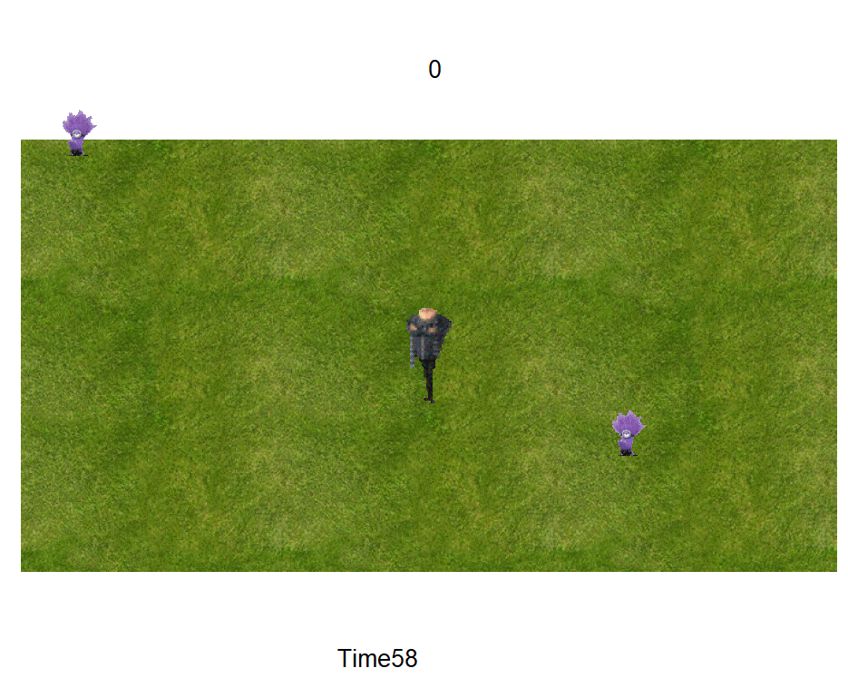
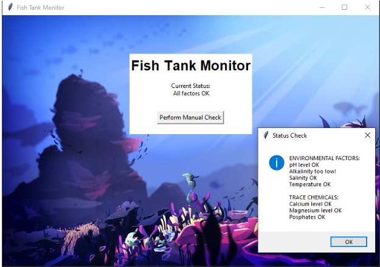
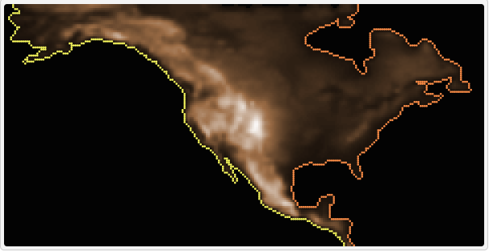
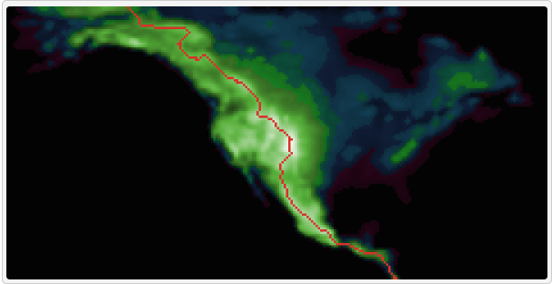

Home
Portfolio
About Me
This is my Portfolio Page!
1.1.9 Project.

this is our project! it is a design your own snowman game where the user can select options like a white or gray snowman, if they want a carrot nose or top hat, or if the snowman is smiling or frowning.
1.2.5 Project.

this is our project! it is a feed the minion game where gru has to move around the area to shoot bananas at the minions so they disappear. there is a timer and a leaderboard of high scores.
Scratch Project.
this is our scratch project! you play a game where you have to feed the dinosaur fish and there are two different levels along with a timer and a scoreboard.
2.1.6 Project.

this is our project! we solved the phishing issues with the code and made recommendations on how to improve its strength.
4.1.4 Project.


this is our project! we picked a simulation based on the continental divide, especially considering the erosion rates and water levels on continents. the model simulated tectonic plates, erosion, sea levels, and climate change.
3.1.6 Project.
this is our project! we had to identify the location of a rover based on different environments it may be present in. by analyzing the data, we associated the rover with being in the desert plains.
Modified bits in pictures.

Use data files to create graphs.

Using netlogo do remix of illusions.